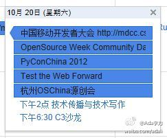

大家安排活动怎么喜欢放在同一天呢？一年有365天啊！2012年10月20日，同一天北京的技术活动有六个：1. 中国移动开发者大会 @CSDN 2. 开源周社区日 @程勇-PeterCheng 3. PyConChina 2012 @ZoomQuiet 4. Test the Web Forward @fiona_duan 5. 技术传播与技术写作 @高志军_PKU 6. C3沙龙 @Deepb1ue 